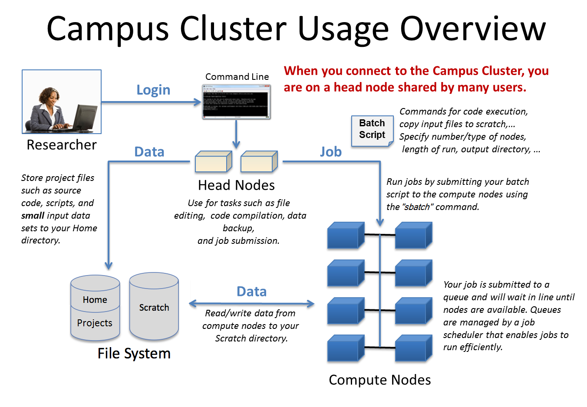
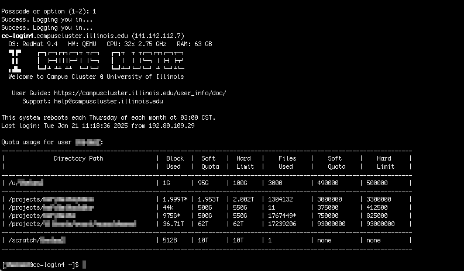
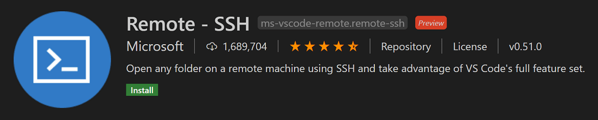
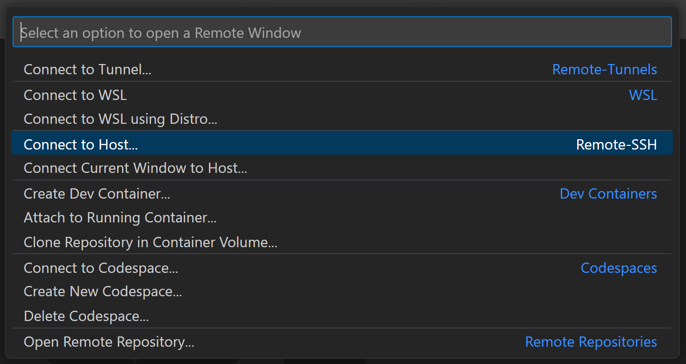
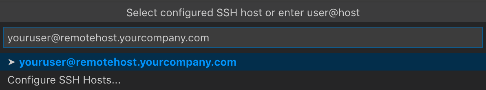
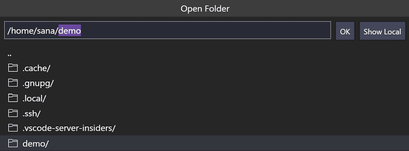
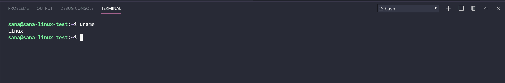

A practical workflow for data analysis
Introduction
Getting started on the
Illinois Campus Cluster
01 · Access
Prepare files on login nodes; run jobs on compute nodes

01 · Access
Request access and confirm your allocation details
Existing lab accessAsk your PI or technical contact which cluster group to join.
A new computing needStart an Illinois Computes request.
| Detail to confirm | Used for |
|---|---|
| NetID | Your login identity |
| Slurm account | The group’s assigned computing resources |
| Partition | A queue you may submit to |
| Project path | A folder where you have permission to save files |
Before connecting: get account approval, confirm these four details, and set up Duo.
01 · Access
The first SSH login
On your laptop: open Terminal (macOS) or PowerShell (Windows)
ssh YOUR_NETID@cc-login.campuscluster.illinois.edussh starts the connection · before @: your user name · after @: the cluster address
1 · Run the commandReplace YOUR_NETID, then press Enter.
2 · PasswordType your NetID password and press Enter; typing stays hidden.
3 · DuoFollow the prompt and approve the authentication request.

02 · Files in VS Code
VS Code is an editor for code and project files

Visual Studio Code (VS Code) is Microsoft’s code editor for working with scripts and project files.
B · ExplorerBrowse files and folders in the left sidebar.
C · EditorRead and edit scripts in the main area.
D · TerminalEnter commands in the bottom panel.
02 · Files in VS Code
Files stay on the cluster; terminal commands run there
LOCAL Your laptop
VS Code window
View and edit
analysis.pyYour screen, keyboard, and mouseRemote - SSH
⟷
View · edit · saveREMOTE The cluster
Project files
demo/analysis.pySave updates this file.Remote terminalCommands run on the cluster.
In the SSH window, saves update cluster files and terminal commands run on the connected host.
02 · Files in VS Code
Install VS Code and the Remote - SSH extension
First: download and open VS Code on your laptop.
1
Open Extensions
Extensions icon
Left Activity BarOr Cmd/Ctrl+Shift+X
Left Activity BarOr Cmd/Ctrl+Shift+X
2
Search Remote - SSHChoose the Microsoft extension
3
Click InstallWait for installation to finish

23The editor and Remote - SSH extension are installed on your laptop.
02 · Files in VS Code
Connecting VS Code with Remote - SSH
1
Choose Connect to Host…Cmd+Shift+P (Mac) · Ctrl+Shift+P (Windows/Linux)
Search: Remote-SSH: Connect to Host
Search: Remote-SSH: Connect to Host

2
Enter your login address

Use this address:
YOUR_NETID@
cc-login.campuscluster.illinois.eduPassword + Duo
Choose Linux if asked.
3
Check the SSH indicatorLower-left corner of the new window
Your indicator should name the cluster.
02 · Files in VS Code
Choose home, project, or scratch storage
| Location | Use it for | Limits and actions |
|---|---|---|
| /u/YOUR_NETID | Settings and small personal files | Very limited quota: 100 GiB (soft limit). Keep large datasets elsewhere. |
| /projects/YOUR_GROUP | Group data, software, and retained outputs | Shared group quota. Keep backups: no snapshots are kept for file recovery. |
| /scratch/YOUR_NETID | Temporary working data | Temporary only: files typically deleted after 30 days without access, sometimes sooner. |
Use your group’s full project path; /projects/YOUR_GROUP is a placeholder.
02 · Files in VS Code
Open the remote project location
1
File → Open FolderIn the connected VS Code window

2Replace it with your own approved project path.
2
Enter the destination, then OKUse your group’s full path, for example:
/projects/YOUR_GROUP
3
Confirm this window is remoteThe lower-left SSH indicator names the cluster.
Explorer now shows the remote destination.
The demo folder is still on your laptop.
02 · Files in VS Code
Upload the demo folder with VS Code
Illustration · small project upload
Your laptop
1
Unzip the offline package
▾ HPC_Introduction
▸ demo
▸ demo
Find this folder in
Finder / File Explorer.
Drag demo→into the
Explorer file list
Explorer file list
VS Code · remote Explorer
/projects/YOUR_GROUP
▾ demo
▾ data
samples.csv
analysis.py
hello.sbatch
▾ data
samples.csv
analysis.py
hello.sbatch
SSH: cluster login host
2
After upload: open demoFile → Open Folder → /projects/YOUR_GROUP/demo
3
Open data/samples.csvCheck the header and three sample rows.
03 · Shell essentials
Open a terminal in the same project
1
Terminal → New TerminalIn your remote VS Code window

hostnameWhich computer?Expect a login node.
cd /projects/YOUR_GROUP/demoMove into your uploaded project.Use your group’s actual path.
pwdWhich folder?Check the full project path.
Run one line, press Enter, wait for the prompt, then continue.
03 · Shell essentials
Read the program, options, and path in a command
head -n 5 data/samples.csv
Programhead displays the beginning of a text file.
Option + value-n 5 asks for the first five lines.
File pathdata/samples.csv is the path to the file to read.
Quotes keep a path together: head -n 5 "data/samples.csv". They are required for paths containing spaces.
03 · Shell essentials
Navigate the uploaded project
Transcript: type commands after $; other lines are output
$ pwd
/projects/YOUR_GROUP/demo
$ cd data
$ pwd
/projects/YOUR_GROUP/demo/data
$ cd ..
$ pwd
/projects/YOUR_GROUP/demo
$ cd ~
$ pwd
/u/YOUR_NETID
$ cd -
/projects/YOUR_GROUP/demo
$ pwd
/projects/YOUR_GROUP/demo| Command | Meaning |
|---|---|
| pwd | Print the current folder |
| cd data | Enter the data subfolder |
| cd .. | Go up one folder |
| cd ~ | Go to your home folder |
| cd - | Return to the previous folder |
cd - also prints its destination. The next pwd confirms it.
. current folder · .. parent · /projects/… absolute path · data/… relative path
03 · Shell essentials
List files and inspect their details
| Command | What changes |
|---|---|
| ls | List visible file and folder names |
| ls -a | Include hidden names beginning with a dot |
| ls -l | Show details such as size and date |
| ls -lh | Use readable sizes, such as K or M |
| ls -lah | Show hidden names, details, and readable sizes |
Illustrative listing with a larger file; total lines omitted
$ ls data
counts.tsv samples.csv
$ ls -a data
. .. counts.tsv samples.csv
$ ls -l data
-rw-r--r-- 1 user group 25165824 Oct 27 10:00 counts.tsv
-rw-r--r-- 1 user group 58 Oct 27 10:00 samples.csv
$ ls -lh data
-rw-r--r-- 1 user group 24M Oct 27 10:00 counts.tsv
-rw-r--r-- 1 user group 58 Oct 27 10:00 samples.csv
$ ls -lah data
drwxr-xr-x 2 user group 4.0K Oct 27 10:00 .
drwxr-xr-x 3 user group 4.0K Oct 27 10:00 ..
-rw-r--r-- 1 user group 24M Oct 27 10:00 counts.tsv
-rw-r--r-- 1 user group 58 Oct 27 10:00 samples.csvWith -h: 25165824 bytes → 24M. counts.tsv is illustrative; the demo still uses samples.csv.
03 · Shell essentials
Creating, copying, moving, and deleting
| Command | Result |
|---|---|
mkdir results | Create one new folder |
mkdir -p results/qc | Create missing folders along the path; accept existing folders |
cp -i notes.txt notes_backup.txt | Copy a file; ask before overwriting |
cp -r data data_backup | Copy the folder and all its subfolders to a new location |
mv -i notes_backup.txt notes_old.txt | Rename or move; ask before overwriting |
rm -i notes_old.txt | Ask before deleting this file |
cp and mv: source first, destination second. Shell deletion normally has no Trash recovery.
03 · Shell essentials
Inspecting a small text file
| Command | Use |
|---|---|
cat notes.txt | Print the entire small file |
head -n 5 data/samples.csv | Print up to 5 lines from the start |
less notes.txt | Browse text; press q to leave |
Output of head for the included sample table
sample_id,reads
sample_A,1000
sample_B,1500
sample_C,1200Preview a few rows before running the analysis. Avoid printing a huge file with cat.
03 · Shell essentials
Find a file, then find text inside it
Search filenames within data and its subfolders
find data -type f -name "*.csv"-type f / -nameKeep files only / match their names against the pattern.
"*.csv"The * matches any text before .csv.
Search inside this file; -n includes line numbers
grep -n "sample_B" data/samples.csvExpected grep output: line 3 contains the match
3:sample_B,150003 · Shell essentials
Count lines and check disk usage
Run this command
wc -l data/samples.csvExpected output; do not type this line
4 data/samples.csvwc -lCount lines in this text file.
4 linesOne header plus three sample rows.
Check space used by the input folder
du -sh data-s gives one summary total · -h uses readable units such as K or M
wc -l includes header lines. du shows space used; quota shows usage and limits.
03 · Shell essentials
Help and everyday terminal shortcuts
| Command / key | What it does |
|---|---|
man ls | Open the manual; press q to leave |
head --help | Show the Linux command’s built-in help |
| Tab | Complete a file or folder name |
↑ / history | Recall previous commands / list shell history |
| Ctrl+C | Interrupt the command currently running in this terminal |
clear / exit | Clear the display / leave the current shell |
Keep this login shell open for job submission; exit closes it.
04 · Slurm jobs
Slurm runs work on allocated resources
LOGIN NODE
Prepare and submithello.sbatchYour terminal stays here.sbatch→SlurmWait for resourcesThe scheduler
Allocate→
COMPUTE NODE
Run the jobhello.sbatchThe program runs here.↕↕
Same shared
demo/ folderInput · scripts · outputBatch: submit a script. Interactive: request a compute shell with srun.
Submit on the login node; the job runs on an allocated compute node.
04 · Slurm jobs
Read a Slurm batch script line by line
Select a line
Use the Slurm account assigned to your group.
01Use Bash to read the commands.
02Give the job a recognizable name.
03Use the Slurm account assigned to your group.
04Use a partition that this account can access.
05Request one compute node.
06Request one task for this program.
07Reserve one CPU for that task.
08Request 1 GiB of RAM per node.
09Set a five-minute running-time limit.
10Print a message into the job output.
Edit these lines inside hello.sbatch in VS Code, then save. Submit it from the terminal after reviewing the resource settings.
04 · Slurm jobs
Set nodes, tasks, CPUs, memory, and time for a job
Example resource request: count the node, the tasks, then the CPUs.
--nodes=11 computer--ntasks=22 tasks in the whole job--cpus-per-task=22 CPUs reserved for each taskNode 1One computer
Task 1One program process
CPUCPU
Task 2One program process
CPUCPU
2 tasks × 2 CPUs/task = 4 CPUs requestedntasks is already the total; do not multiply by nodes again.
Reserving resources does not launch the tasks or make the program parallel.
Keep hello.sbatch at: 1 node · 1 task · 1 CPU/task
--mem=1G1 GiB of RAM per node--time=00:05:00Runtime limit: hours:minutes:seconds04 · Slurm jobs
Submit a job, then check its status
1 · Submit the saved hello.sbatch
pwd
ls hello.sbatch
sbatch hello.sbatchExample response: Submitted batch job 123456
2 · Check the queue
squeue -u YOUR_NETID-u selects your user.
Run it again for a fresh status snapshot.
Use the job ID returned by your submission.
Illustration: job 123456
PD
Pending
Queued; check the reason
R
Running
Using allocated resources
No longer listed
Read the output
slurm-123456.out
Leaving the queue does not prove success.
3 · Read the output after the job ends
cat slurm-123456.outExpected message: My first HPC job
Optional · Cancel an unwanted job
scancel 123456Let hello finish here; cancellation stops that job.
04 · Slurm jobs
Output files and email notifications
In analysis.sbatch, before executable commands
#SBATCH --output=analysis-%j.out
#SBATCH --error=analysis-%j.err
#SBATCH --mail-type=END,FAIL
#SBATCH --mail-user=YOUR_NETID@illinois.eduIllustration: analysis job 123457. Slurm fills in
%j.Program outputOrdinary messages
→
analysis-123457.outProgram diagnosticsErrors and other messages
→
analysis-123457.errSlurm events
→
END or FAILEmail to
YOUR_NETID@illinois.eduAn
.err file can also contain progress messages. Read its contents.%j becomes the job ID. Use your email address, or remove both mail lines.
04 · Slurm jobs
When the analysis needs a GPU
Optional GPU job: use your group’s GPU partition and GPU type
#SBATCH --partition=YOUR_GPU_PARTITION
#SBATCH --gres=gpu:GPU_TYPE:1Inside an allocated NVIDIA GPU job
nvidia-smi--gresRequest GPUs with gpu:TYPE:COUNT; count is per node.
GPU_TYPE / final 1The configured GPU type / one GPU per allocated node.
The tiny demo needs no GPU. Add this only for software that supports and uses one.
04 · Slurm jobs
When a particular node is required
Optional: use a compute-node name your account can access
#SBATCH --nodes=1
#SBATCH --nodelist=NODE_NAMEsinfo: inspect resources; -p selects the partition; -N lists nodes
sinfo -p YOUR_PARTITION -N--nodes=1How many nodes you request
--nodelistWhich named node you request
Normally let Slurm choose. Name a compute node only when your group requires that machine.
04 · Slurm jobs
Open an interactive compute shell with srun
From the login shell in demo: paste this whole block as one command
srun --account=YOUR_ACCOUNT --partition=YOUR_PARTITION \
--nodes=1 --ntasks=1 --cpus-per-task=2 \
--mem=4G --time=00:15:00 --pty bashsrunStart a program on allocated compute resources.
--pty bashOpen an interactive terminal running the Bash shell.
After the prompt returnshostname should show a compute node; pwd should show the project folder.
A trailing \ continues a command onto the next line; nothing follows it on that line.
05 · Software and packages
Make Python available in the compute shell
Inside the allocation, in demo; use a version shown as available
module avail python
module load python/3.11.11
module list| Command | Meaning |
|---|---|
| module avail python | List cluster modules matching Python |
| module load python/3.11.11 | Select this installed Python version for this shell |
| module list | Confirm which cluster modules are loaded |
analysis.py needs pandas. Next, create .venv in demo and install pandas there.
05 · Software and packages
Create the environment, install pandas, and verify it
Continue in the same compute shell and remote demo folder.
1 · Create, activate, and install
python -m venv .venv
source .venv/bin/activate
python -m pip install pandas
ls -a- -m venv
- Run Python’s venv tool to create .venv.
- source
- Select .venv/bin/python in this shell.
- -m pip
- Run this Python’s package installer.
- ls -a
- Show hidden names, including .venv.
2 · Verify pandas, then record versions
python -c \
"import pandas; print(pandas.__version__)"-c runs the quoted code. Expect a version number with no import error.
python -m pip freeze > requirements.txtfreeze lists installed package versions.> writes them to the file, replacing existing contents.
Wait for pip to finish before checking the import. Keep this compute shell open.
05 · Software and packages
The environment stays; activation is per shell
Install packages
python -m pip install pandasAfter creating and activating .venvWrite files→
Shared project storage
demo/.venv/Python + installed packagesThese files remain.Activate in each new shell or job
source .venv/bin/activateCurrent compute shell
python→.venv/bin/pythonSame existing.venvNo reinstall
A later batch job
python→.venv/bin/pythonAfter setup, exit returns to the login shell; .venv stays in project storage.
05 · Software and packages
Create a Conda environment from a supplied file
Alternative route when the project supplies environment.yml
module avail miniconda3
module load YOUR_CONDA_MODULE
conda env create -f environment.yml
conda run -n analysis python -c "import pandas; print(pandas.__version__)"environment.ymlRecords the environment name and requested packages
-f environment.ymlRead the environment specification from this file.
-n analysisUse the environment named analysis (from name: analysis in the file).
Choose this instead of .venv. In a new compute shell, expect a pandas version with no error.
06 · Run and check
Prepare and submit the Python analysis job
1 · Edit analysis.sbatch, then save it — read left column, then right
#!/bin/bash
#SBATCH --job-name=analysis
#SBATCH --account=YOUR_ACCOUNT
#SBATCH --partition=YOUR_PARTITION
#SBATCH --nodes=1
#SBATCH --ntasks=1
#SBATCH --cpus-per-task=1
#SBATCH --mem=1G
#SBATCH --time=00:05:00#SBATCH --output=analysis-%j.out
#SBATCH --error=analysis-%j.err
set -e
module load python/3.11.11
source .venv/bin/activate
python analysis.pyset -e stops on setup failure.
Use your account, partition, and available Python module.
2 · Submit from the login shell in demo
pwd
ls data/samples.csv analysis.py analysis.sbatch
sbatch analysis.sbatch3 · Record the new job ID and check
Example response: Submitted batch job 123457
squeue -u YOUR_NETIDUse that ID in analysis-JOBID.out
and analysis-JOBID.err.
06 · Run and check
Watch job output and search the error log
After the job starts and the log exists
tail -n 20 analysis-123457.out
tail -f analysis-123457.out-n 20: last 20 lines · -f: follow new output
After Ctrl+C stops the viewer
grep -in "error" analysis-123457.err-i: ignore case · -n: show line numbers
Illustration: a job and its log viewer
Batch job
123457
Continues running
writes→
Log file
analysis-123457.outtail -f reads this file↓
Terminal log viewer
tail -f analysis-123457.out
Ctrl+CStops this viewer
The job and log viewer are separate processes.
To cancel the analysis job itself: scancel 123457.
06 · Run and check
Open the result in VS Code
Illustration · expected result from the supplied demo
EXPLORER · DEMO
▸ data
1 ▾ results2 summary.csvanalysis.py
analysis.sbatch
1 ▾ results2 summary.csvanalysis.py
analysis.sbatch
summary.csv
1
samples,total_reads23,37003
3 input samples
3,700 total reads
Read it here. No download needed.
For a local copy: right-click the remote file → Download…
Other viewers: logs and images open directly;
Rainbow CSV colors columns; PDF/Jupyter extensions open those files.
06 · Run and check
Run an R script as a Slurm batch job
R commands below the #SBATCH resource settings
module load R
Rscript analysis.RCopy analysis.R and analysis_R.sbatch into the project; set the account and partition
sbatch analysis_R.sbatchSame inputdata/samples.csv
R outputresults/summary_R.csv
This example uses base R; no additional package installation is needed.
06 · Run and check
Common errors and the first useful check
| What you see | Check first |
|---|---|
| No such file or directory | Run pwd; check the path and filename capitalization. |
| Command not found | Check spelling; load the module or activate the environment. |
| No module named… / no package called… | Select the intended Python/R environment; install the missing package there. |
| OUT_OF_MEMORY / TIMEOUT | Compare --mem / --time with the tool’s documented requirements. |
| Invalid account / partition | Use your approved --account and matching --partition. |
| Permission denied / quota exceeded | Run quota; confirm the group gave you write access to that folder. |
06 · Run and check
Documentation and help
ICC support: help@campuscluster.illinois.edu
Full references and image credits are in SOURCES.md.